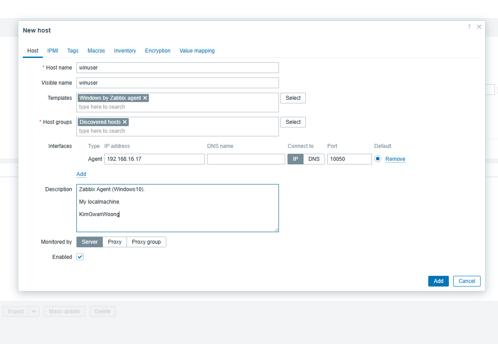
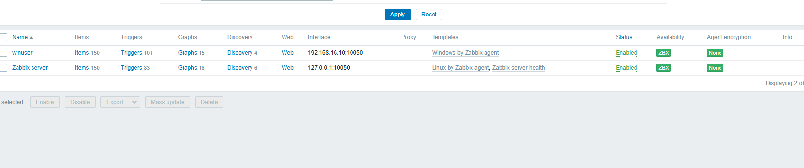

Zabbix는 오픈 소스 기반의 엔터프라이즈급 모니터링 솔루션으로, 네트워크, 서버, 애플리케이션 및 클라우드 인프라를 실시간으로 모니터링하고 관리할 수 있습니다. 이 프로젝트에서는 Zabbix 서버를 구축하고, 다양한 호스트와 서비스의 상태를 효과적으로 모니터링하는 환경을 구현하였습니다.
Windows Client에서 10050 TCP 포트를 통해 Zabbix Server와의 연결을 설정하였습니다. 이를 통해 클라이언트 호스트의 상태 정보를 Zabbix 서버로 전송할 수 있습니다.
 Zabbix 웹 인터페이스에서 새로운 호스트를 생성하고, Zabbix Agent가 성공적으로 연결된 것을 확인할 수 있었습니다. 이를 통해 호스트의 다양한 메트릭을 모니터링할 수 있습니다.
Zabbix 대시보드를 통해 연결된 호스트의 CPU 사용률, 메모리 사용량, 디스크 I/O 등 다양한 성능 지표를 실시간으로 모니터링할 수 있었습니다. 이를 통해 시스템의 상태를 효과적으로 관리할 수 있습니다.
이 프로젝트를 통해 Zabbix의 강력한 모니터링 기능을 활용하여 네트워크 및 시스템의 상태를 실시간으로 관리할 수 있었습니다. Zabbix 구축은 조직의 IT 인프라를 효율적으로 운영하는 데 중요한 역할을 하였으며, 향후 시스템 관리에 있어 중요한 자산이 될 것입니다.